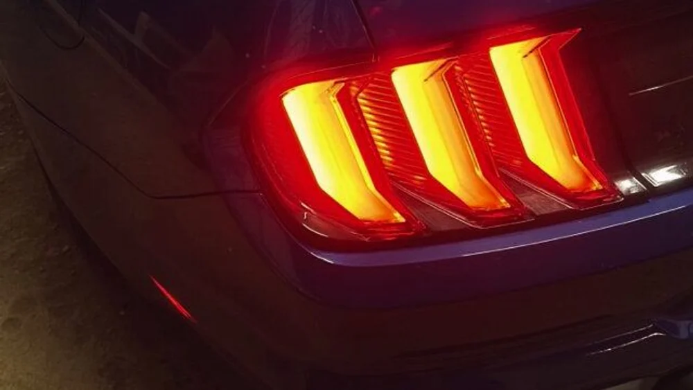
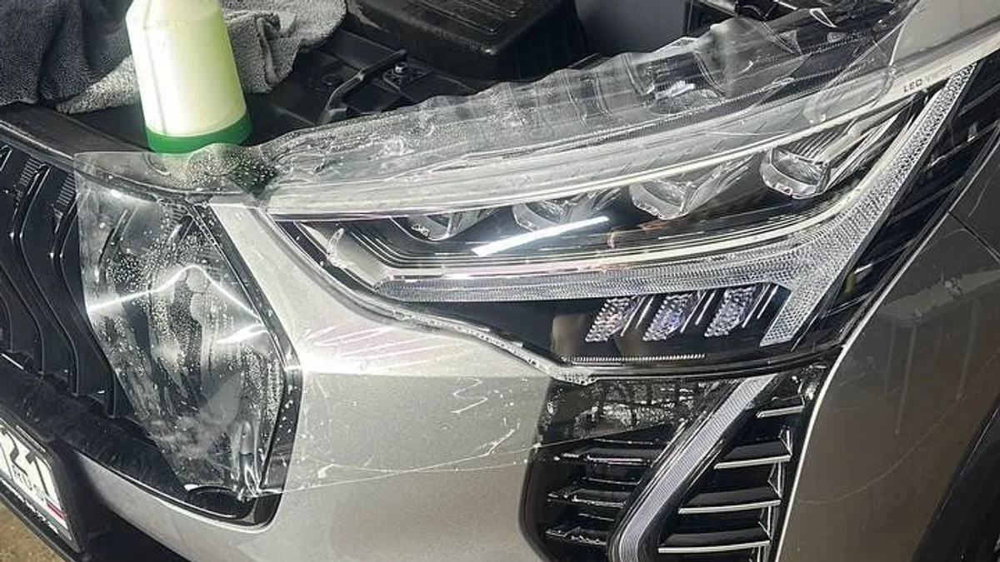
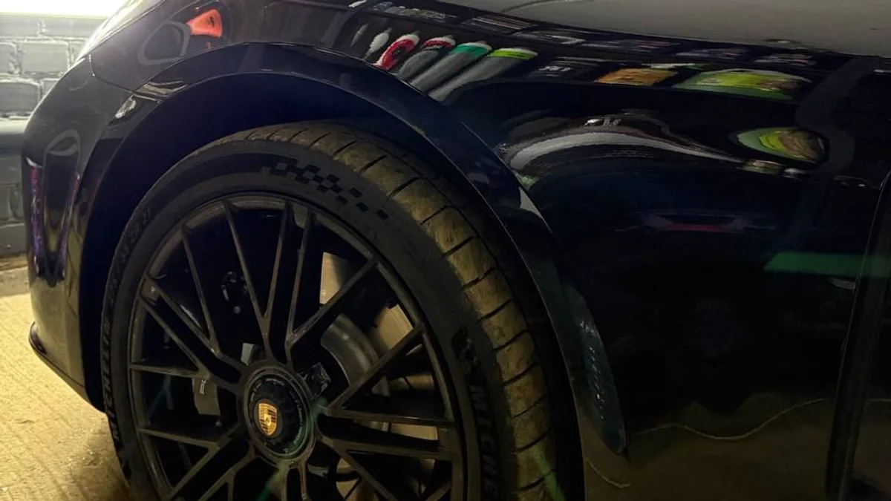
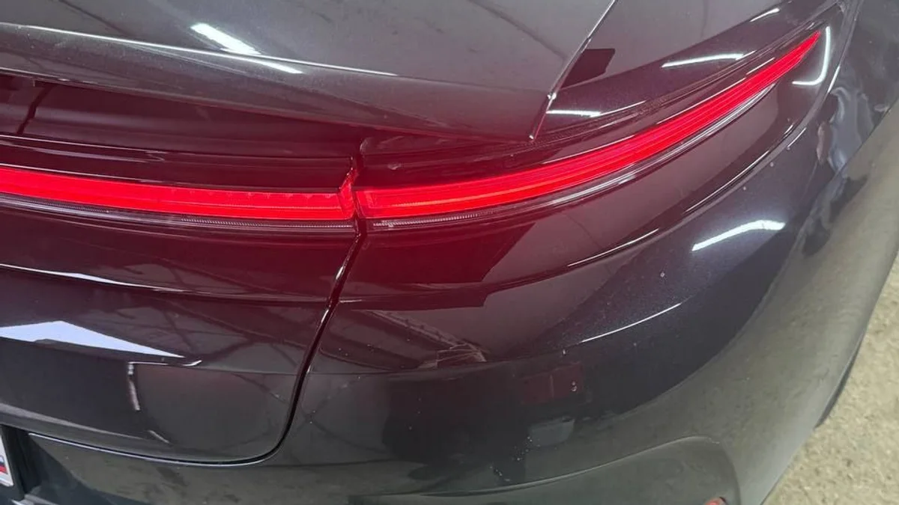

Детейлинг в Чебоксарах · улица Кадыкова, 1А
Полировка, плёнка и химчистка авто в Чебоксарах
Cullinan на Кадыкова, 1А: полировка кузова, защитная плёнка на капот, тонировка и химчистка салона. Выберите день и час, затем позвоните.
- Клиенты пишут: «сделали отлично и недорого»
- Пн-сб 09:00-18:00, воскресенье выходной
- Кадыкова, 1А, рядом с Новоюжной автостанцией

Услуги Cullinan в Чебоксарах
Входит
- Полировка кузова
- Защитная плёнка на капот и другие зоны риска
- Тонировка стёкол
- Химчистка салона
Отдельно, если нужно
- Запись пн-сб с 09:00 до 18:00, перерыв с 12:00 до 13:00, воскресенье выходной
- Адрес: улица Кадыкова, 1А, Чебоксары
- Цены, кроме полировки, называют при записи
Цены: полировка, плёнка, тонировка, химчистка
Полировка - цена с карточки студии на Яндекс Картах (давно не обновлялась). Остальные цены называют при записи, по вашему автомобилю.
Кузов и защита
- Полировка кузовацена с карточки Cullinan9 999 ₽
- Защитная плёнка на капотброня капотауточнить
Тонировка и салон
- Тонировкастоимость зависит от автомобиляуточнить
- Химчистка салонастоимость зависит от автомобиляуточнить
Полировка 9999 ₽ указана на карточке студии и давно не обновлялась. Итоговую сумму называют до начала работ, она зависит от автомобиля.
Как записаться в Cullinan в Чебоксарах
- 01
Выбрали услугу и время
Укажите услугу, день и час в форме на сайте и позвоните: +7 (908) 304-68-54. Марку автомобиля скажете в разговоре.
- 02
Согласовали сумму и срок
Мастер называет стоимость и срок для вашего автомобиля. Время подтверждаем по телефону.
- 03
Автомобиль в работе
Полировка, плёнка, тонировка или химчистка - по договорённости с мастером.
- 04
Выдача автомобиля
Осматриваете результат на месте. Оплата по договорённости.



Что пишут клиенты Cullinan в Чебоксарах
Отлично и недорого
«Приезжал на полировку и броню капота в прошлом году, сделали отлично и недорого» - Роман Родин, 4 февраля.
Быстро и по хорошей цене
«Спасибо большое Антону за то что в короткий срок и по хорошей цене преобразил мою машину, вернул ей новый вид» - отзыв на Яндекс Картах, 18 ноября 2025.
Всё в одном месте
«Там же закатал тонер и сделал химчистку» - Роман Родин, 4 февраля.
Качественно и без нареканий
«Заезжал, место отличное все сделали качественно и без нареканий, персонал приятный» - отзыв на Яндекс Картах, 2 февраля.
Частые вопросы
Сколько стоит полировка авто в Чебоксарах?
На карточке Cullinan указано 9999 ₽ за полировку авто, цена давно не обновлялась. Точную сумму для вашего автомобиля называют при записи.
Делаете ли броню на капот?
Да, клиенты пишут про полировку и броню капота. Стоимость и срок называют при записи.
Есть ли тонировка и химчистка?
Клиенты пишут, что в студии делали тонировку и химчистку. Цену называют при записи.
Где находится студия?
Улица Кадыкова, 1А, Чебоксары. Ближайшая остановка - Новоюжная автостанция, 580 метров.
До скольки работает студия?
С понедельника по субботу с 09:00 до 18:00, перерыв с 12:00 до 13:00, воскресенье выходной.
Как записаться?
Выберите услугу, день и время в форме на сайте и позвоните: +7 (908) 304-68-54.
Запишитесь на полировку, плёнку или химчистку в Чебоксарах
- Адрес
- улица Кадыкова, 1А, Чебоксары
- Часы
- пн-сб 09:00-18:00, перерыв 12:00-13:00, вс выходной
- Телефон
- +7 (908) 304-68-54